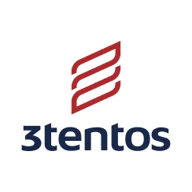
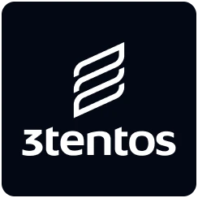
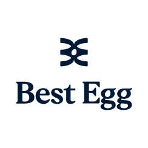
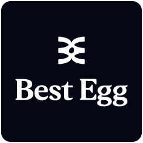
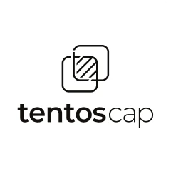
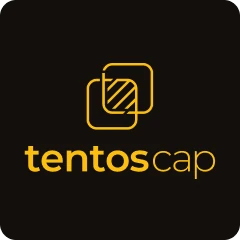
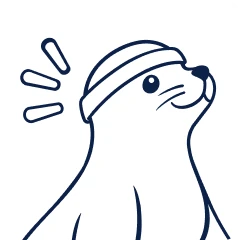
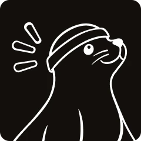

Issue 01
Tags that got in the way
Video tags meant to give quick access to related videos cluttered the screen and slowed comprehension.

In an era of AI, I'm a proudly human UX and Product Designer, crafting people-centered, scalable and accessible digital products.
FEATURED PROJECT
A backoffice suite that helps 135+ consultants guide about 25,000 farmers, from client dashboards to crop management plans, now redesigned for the phone in their pocket.
See the case study →A Swiss Army knife designer: adaptable, collaborative and always ready to jump in wherever the team needs me.
I’m a Product Designer with 5+ years of experience turning complex workflows into products people actually enjoy using. I design enterprise-grade web and mobile experiences, always starting from the person on the other side of the screen, and I bring research, interaction design and design systems together to make them intuitive and accessible at scale.


01A suite of backoffice tools for agribusiness consultants, taken from field research to interface design, and now reimagined for mobile.


02Best Egg’s first native app, putting loan management in the pockets of 1.5 million users on iOS and Android.


03The app for TentosCap’s first credit card, designed end to end, from onboarding to account management, in time for its public launch.


04A study-planning app for exam candidates, taken through the full UX process from research to a tested prototype, and rebooted in 2026.

3tentos consultants use Terra 3, a remote agronomic monitoring platform, to recommend the best management for each field. Powerful but dense, the platform gives you a lot to take in when you need answers fast.
Make a robust platform easy to read at a glance, so 135+ consultants can give about 25,000 farmers the right recommendation, designed around how they really work: in the field, not at a desk.
“When I’m driving back from a client’s farm and pass someone else’s field, I always stop to take a look and jot down what I see in my notebook.”
Paper comes first
Notes go into a notebook first and get typed in later, and mistakes creep in along the way.
Read at a glance
Consultants need answers they can read at a glance, not charts to decode.
Life on the road
Consultants spend most of the day between farms, where a laptop gets in the way.
Signal is a luxury
Rural connectivity is spotty, so field tools have to work offline and sync later.

The Web Manager home is where every tool meets, each one click away.
The client dashboard shows each farmer’s cultivated area by crop, purchased vs. delivered products and sales targets at a glance. I owned it end to end, from requirements to the stakeholder presentation. It was tested with users in the field, and the visuals were adjusted to how they understood it and what they needed.


Left: the four grayscale wireframes, with the vertical rail chosen. Right: the final plan preview on desktop.
PAP is where consultants plan each plot’s season, from sowing to harvest, with product rates calculated from the plot’s size. I built its first version in 2022 with another intern.
Watching consultants at work made one thing obvious: laptops don’t fit a job that happens on the road and between farms, often with no signal. I proposed mobile-first, offline-capable screens that sync on their own once the connection returns. The client wasn’t ready to invest in it then, but the idea never left me.

Satellite imagery in the mockups: ©2026 Google; Airbus, CNES, Maxar Technologies.
Back in 2022 I designed the client dashboard and the Web Manager home end to end, and built PAP and the satellite mapping legend with another intern. The mobile-first proposal didn’t move forward then. But I just couldn’t resist. In 2026 I picked this project up and redesigned most of the screens I had, this time with the experience I’d acquired. I also took into my hands the opportunity to finally bring into existence my vision for the mobile versions that could not be done back then.
None of these screens have been tested with users yet, and realistically they may never be. Still, if I ever got the chance, I’d put the mobile PAP in the hands of consultants on their routes and watch whether they reach the current step of the crop cycle faster than on a laptop. I’d also love to hear, in their own words, whether pins and quick edits earn a place in their day, or whether they’d still rather keep their good ol’ notebooks.


Best Egg helps people in the US pay off and consolidate personal loans. In 2024 it had 1.5 million active users on its web platform and no mobile app, so everything they needed to manage their loans lived on the website.
Design the first version of a native iOS and Android app that brings the core account tasks to mobile, while meeting every legal and compliance requirement a lending product carries.
An app is more than the website copied onto a smaller screen: it has to meet the expectations of its platform.
Web first
The app had to inherit the information architecture of Best Egg’s web platform, adapted to a smaller screen, and still feel like a tool of its own, built for what mobile users need.
Legal on every screen
Screens were tied to required legal copy and had to go through multiple bank compliance and legal sign-offs.


The Tools tab shows each user’s credit score on a five-level scale, with its history over time and the factors behind it, like payment history and credit usage. Even people without a loan can follow it.
Each loan shows whether it’s enrolled in autopay, with a read-only summary of amount, frequency, next due date and payment method. Editing goes through the required consent screen and shows the payment cutoff time.


People pick a loan, amount, payment method and date, then review and confirm. The flow adapts to people with one loan or several, and to those already enrolled in autopay.

TentosCap, the financial arm of 3tentos, lent farmers money for their crops, repaid at harvest in soybean sacks. Knowing how much they owed in sacks meant checking the day’s soybean price, asking a TentosCap representative and doing the math.
Design TentosCap’s first credit card app end to end: a no-annual-fee Visa with limits set by an in-app credit analysis and a balance paid in full at the end of the harvest, ready for a public launch at CropShow on February 28, 2023.
At launch, most farmers cared more about getting through onboarding quickly than about security.
Skeptical by default, yet excited at the promise
As with anything new, many farmers met the card with skepticism at first, but some were excited about a card whose payments follow their harvest cycle.
Speed over security
Most farmers cared more about how fast they could finish onboarding and request the card than how the processes would work.
Hands-on onboarding
I guided farm-operation leads through onboarding myself during the event.


Statements are issued monthly, but the full balance is paid once a year at the end of the harvest, with the due date fixed on May 31, tied to the soybean harvest. The home dashboard shows the balance in reais and in soybean sacks, so farmers no longer have to do the math themselves.
Registration was the largest flow: personal info, password creation and KYC steps, with a manual review by the TentosCap team in their backoffice tool whenever document recognition failed, so no one got stuck.


Once approved, farmers get everything a card should offer: monthly statements, invoice payment, profile management and a yearly contract renewal.
Our team built and used a Design Library quickstarter: a file with tokens already bound to components and styles like form fields, buttons and headers, so a new client only needed its brand colors and details adapted. That head start let me deliver every screen by mid-December, leaving January for App Store and Google Play assets and final touches before the card launched on February 28, 2023.


In 2018, the number of people investing in public service exams in Brazil was growing about 40% a year, and abstention could reach 60%, as many candidates felt they had no chance against hundreds of thousands of applicants. Our interviews showed candidates struggled to keep a study routine, assess what they knew, and understand the exam notice.
Sources: Estúdio Correio (2018); a prep-course school director interviewed by UOL (2018).
How might we help exam candidates organize their studies and assess their knowledge before the exam? We took this question through the full UX process during a two-week intensive course at Mergo.
“With two kids and working until 11pm, it’s hard to find time to study, right?!”
No time
Lack of time to study was the most common finding.
No routine
Creating and keeping a daily study routine was the hardest for most people.
Weak spots first
In the little time they had, candidates focused on their hardest subjects.
Past exams as practice
To assess themselves, they used mock tests built from past exam questions.
Skipping the exam notice
Many interviewees didn’t read the exam notice, partly because they couldn’t even find it.
We tested with 4 real users on 3 tasks. Two features stumbled, and we fixed both before the final version.
Issue 01
Video tags meant to give quick access to related videos cluttered the screen and slowed comprehension.
Fix 01
We moved the tags into the video description.


Issue 02
Onboarding asked users to add fixed daily tasks per weekday with start and end times. Rule-based logic then found free windows and suggested a matching study activity, like a short video during a 30-minute break. In 2 of the 4 tests, users couldn’t understand how to use it.

Fix 02
We simplified it to choosing a study-time target for each weekday.


“You can easily tell where everything is. Very objective and well explained.”

The final version is a medium-fidelity Figma prototype, evolved from a paper prototype and built around two ideas: a weekly study plan based on time targets, and video lessons and content with past exams and mock tests.

Seven years later, I came back to Foca no Concurso with everything I’ve learned since. This is a reboot of the original screens: the flow we tested in 2019 stays, while the visual identity, accessibility and feedback get a fresh take.

I redrew the logo myself, giving the seal an orange headband, and that orange became the main color in place of the original blue, with soft tints that keep the tone friendly. Fredoka brings the playful side to titles, Outfit keeps longer text easy to read, and orange buttons always carry dark text for contrast.
Lessons now include captions, audio description, a transcript and a notepad, all one tap away under the video. The next lesson waits in a small floating bar instead of taking up space on the screen.


When a simulado (mock exam) ends, the results break down by subject instead of showing only a total score, so candidates can see where they’re losing points. This idea comes from the original prototype. What’s new is an encouragement card for people who pass but struggle in one or two subjects: it suggests shifting study hours toward them for a few days, with a shortcut to adjust the plan.
Studying for a concurso (public service exam) is a long haul, so small wins matter. When candidates complete their daily study time, a celebration screen marks it with a summary of the day and an option to share. It only appears after they finish the current study activity, so it never interrupts a lesson or a simulado.


As planned in 2019, candidates choose which exams they’re studying for, and the app shows the rules and subjects they should focus on.
I'm a curious and motivated designer who thrives on challenges and creating user-centered digital products. I combine analytical thinking with empathy, enjoy learning new skills, and value teamwork for achieving great results.
Product design, research & tooling
Languages, awards & certifications